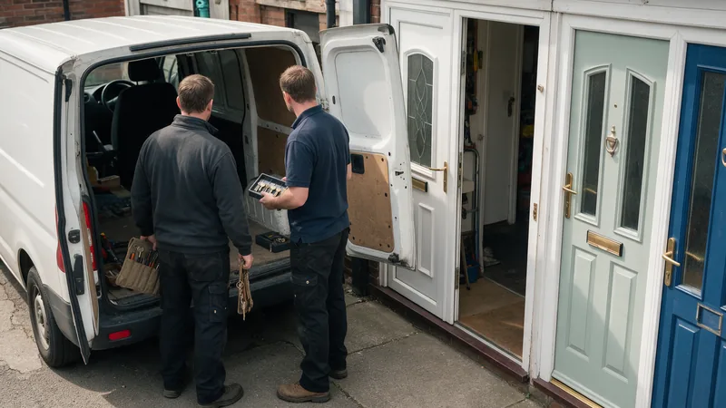

About
A firm that does not exist.
Latchwick Locksmiths is invented. There is no van, no workshop and nobody to ring. It is a demo built by Clockwork AI to show a real locksmith firm what a site like this looks like when everything on it is written properly. The story below is made up, and so is everybody in it.
The made up version
Two of us and a van, plus a bench with a key machine on it. The name came from a latch and a wick, which is roughly how the work goes: a latch somebody cannot get past, usually at the hour when the lights are on.
Most of our work arrives as a phone call from somebody stood on their own step feeling stupid. So the way we work is built around that minute: nobody gets made to feel daft, we ask whether another door is open before we set off, and nothing gets drilled, forced or replaced without you hearing first what we are about to do and why.
How we would like to be judged
By whether the door still works when we have gone, and by whether you knew what was happening before it happened. Getting into a house is not the difficult part of this trade. Doing it without wrecking anything, and being straight about the times you cannot, is the part that makes the difference.
The other half of it is repair over replacement. A uPVC door that will not lock is a part and an afternoon far more often than it is a new door, and we would rather tell you that and do the small job than agree with whoever quoted you for the big one.
What we will tell you no about
Car and van keys, which need the coding kit for the make. Alarms, cameras and doorbells, which are an installer's trade. New doors and windows, where you want a firm with a measure and a fitter. Anything we would be guessing at, including a safe nobody knows the number to, where we will tell you honestly that we do not know whether it will open until we see it.

Generated photoGenerated for this demo. Nobody in it is a real person and the van carries no name.
The two of us
Invented people.
Dez
Fifteen odd years on doors and the one who will spend twenty minutes opening something cleanly rather than two minutes drilling it. Does most of the lockouts and most of the explaining.
Ruth
uPVC mechanisms, window locks and the bench. Can tell from how somebody describes lifting their handle which of the three usual faults it is, and is usually right before the van moves.
Joan
Answers the phone, keeps the diary and asks the awkward questions: is another door open, does anybody else have a key, is anybody shut in. Saves more visits than she books.
Made up for this demo. None of these people exist.
About this demo
What you are actually looking at.
Everything is fictional
The firm, the people, the jobs, the reviews and the pictures. The phone number is from the range Ofcom keeps for television and film, so it rings nobody, and the email address ends in .example, which cannot receive anything.
No prices anywhere
On purpose. What Clockwork costs a real firm is a conversation rather than a web page, and inventing a locksmith's prices would just be making numbers up.
Nothing is sent or saved
The booking form and the chat both run entirely in your browser. They check what you type, show you a confirmation and then forget it. No server, nothing stored, nobody called.
Want the same thing for a real firm? The Clockwork number is in the bar at the top of every page.
Seen enough of the demo?
Have a look at the work, the advice or the booking form. Or ring Clockwork on the number in the bar at the top.